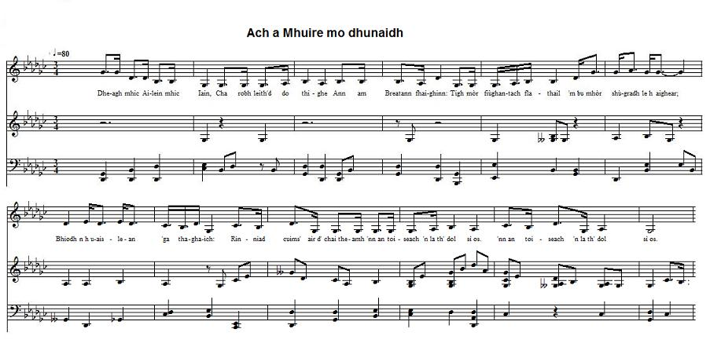
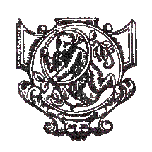

Och a Mhuire Mo Dhunaidh - Marbhrann Mhic 'ic Ailein
Lament on Chief Allan of ClanRanald who fell at Sherrifmuir (1715)
Elégie d'Alain, chef du ClanRanald, tombé à Sherrifmuir (1715)
le Niall MacMhuirich - by Neil McVurich (c. 1630-1716)
As sung by Roderick McKinnon (Ruairidh Iain Bhàin) and recorded by Dr John Lorne Campbell in 1938 at Castlebay, Island BarraTune - Mélodie
"Marbhrann Mhic 'ic Ailein"
Sequenced by Christian Souchon

|
To the tune:
The tone background to this page is the Midi transcription ( or an attempt at it) of the singing of Ruairidh Iain Bhàin , who, as stated in a note, was the only person who had this (pentatonic) melody for the song. The record, dating from March 1938, is in the collection of the National Trust for Scotland. Other particulars may be found at the following Internet address: www.tobarandualchais.co.uk/fullrecord/39661/1. To the lyrics There are significant differences between the verse and line order of the song composed by McVurich (c. 1630-1716) as sung here, and those of the following printed sources: - 'Bàrdachd Ghàidhlig' (W. Watson ed., third edition 1959) p. 141; - 'Scottish Tradition (16) - William Matheson: Gaelic Bards & Minstrels' (The School of Scottish Studies) notes p. 8; - 'Sar-Obair nam Bard Gaelach' (The beauties of Gaelic Poetry, Glasgow, 1841) de John McKenzie p.67. Unfortunately I failed to find a translation of this text, or for the similar poem by McVurich titled "Gur e naigh each na ciddair". But the long elegy harboured in the "Red Book of ClanRanald" MS was published with an English translation. |
A propos de la mélodie:
Le fond sonore de cette page est (un essai de) transcription MIDI d'un enregistrement phonographique datant de mars 1938 conservé par le National Trust for Scotland. Une note accompagnant ce document indique que le chanteur Ruairidh Iain Bhàin était le seul à connaître cette mélodie (pentatonique). L'enregistrement, datant de mars 1938, fait partie de la collection du National Trust for Scotland. On trouvera d'autres détails à l'adresse Internet suivante: www.tobarandualchais.co.uk/fullrecord/39661/1. A propos des paroles Le chanteur interprète deux couplets du poème de McVurich (c. 1630-1716), mais il y a d'importantes différences, quant à l'ordre des strophes et des vers à l'intérieur de celles-ci, avec les sources imprimées: - 'Bàrdachd Ghàidhlig' (W. Watson, 3ème édition 1959) p. 141 - 'Scottish Tradition (16) - William Matheson: Gaelic Bards & Minstrels' (The School of Scottish Studies) notes p. 8 - 'Sar-Obair nam Bard Gaelach' (The beauties of Gaelic Poetry, Glasgow, 1841) de John McKenzie p.67. Je n'ai malheureusement pas trouvé de traduction de ce texte, ni du poème qui lui fait pendant "Gur e naigh each na ciddair". En revanche la longue élégie tirée du Livre rouge de ClanRanald a été traduite en anglais par les éditeurs de ce manuscrit. |

|
ELEGY ON MAC 'IC AILEIN and
ELEGY ON THE YEAR 1715 by Neil McVurich [1] Neil Mac-Vurich (c. 1630-1716), the family bard and historian (Seanachaidh) of ClanRanald, Mac-Dhonuill Mhic-'Ic-Allein, was born in the beginning of the 17th century. He lived in South-Uist, where he held a possession of land designated as Baile-bhàird, i.e; the "Bard's farm". He was of a succession of poets that the illustrious family kept, to record the history of their ancestors, as was requisite in those days in the halls of chiefs of renown. There was several bards of the name McVurich, all of them descendants of the same man. He had written the history of several great clans. But he also had written ancient poetry and the history of past times. Very little of his own history and of his works has been preserved, since, like many other bards, he was not at the trouble of writing his own productions. So that, of a certain Lachunn Mor Mac Mhuirich Albannaich, only one piece (Brosnacha-Catha... "Incitement to the Gaels before the Battle of Harlaw, in 1411") was not lost. This piece has a part for every letter in the Gaelic alphabet and consists altogether of 338 lines. [2] This poem is notable as being written in stressed metre by a highly trained professional bard and seanchaidh, who was accustomed to use the old classic metres. [3] Iarla Chòig Uladh : "Earl of the Province (lit. Fifth) of the men of Ulster"; i.e., the Earl of Antrim, who was descended from the Macdonalds of Dùn Naomhaig in Islay, and was kin to Clanranald. [4] Ceannard fhear Mhuile : Sir John Maclean; [5] Domhnall nan Domhnall : Sir Donald Macdonald of Sleat; [6] Raghnall : Allan's brother, who was also at Sherrifmuir. He succeeded to the Chiefship; see stanzas 5 and 11. [7] Mac MhicAlasdair , the patronymic of Glengarry, who also held Knoydart; [8] a nios : "as the charge was termed". "An dol sìos, so pilleadh a nìos" denotes the act of retreating or flinching from the charge; literally "returning uphill". [9] air a druim : compare "mar tarbh tuinnidh an druim tora," like a firm-set bull pressing on the backs of fleeing foes. [10] Such tokens on the death of a chief are a common- place of the older Gaelic poetry. Similarly the elegy on Allan , already referred to, has the quatrains: 12. Na slèibhte ag sileadh fa seach sneachta fuacht agus flichreacht, 'sgan bhlàs do fearthuin feasda O bhàs Ailin shior-chneasda. 13. An ghaoth go garbh glorach cas 's muir da freagra go fior-bhras: tromghàir na tuinne ag tuitim 's lomlàn tuile ag tiorm-bhailtibh. [11] cha hu lothaqan cliata : "The Captain of ClanRanald (who fell at Sherrifmuir) . . . had been a colonel in the Spanish service. On his return home he brought with him some Spanish horses, which he settled in his principal island of South Uist. These, in a considerable degree, altered and improved the horses in that and the adjacent islands. Even in the year 1764, not only the form, but the cool fearless temper of the Spanish horse could be observed in the horses of that island, especially those in the possession of ClanRanald himself, and his cousin McDonald of Boysdale." — Walker, Economical History of the Hebrides, II., l6O (pub. 1808). [12] o d' leanmhuinn : from those whom you follow ; from your ancestors. Source: Sar-Obair nam Bard Gaelach (The beauties of Gaelic Poetry, Glasgow, 1841) by John McKenzie p.67.  As mentioned above, the collection ""Sàr-Obair nam Bard Gaelach" (1841) includes, on pages 65 and 66, a second poem by the Neil McVurich on the death of Allan of Clanranald, but is not yet aware of the existence of the long elegy by the same author which was found in the "Red Book of Clanranald". ORAN DO MHAC-MHIC-AILEIN le Niall Mac-Mhuirich 1. Gur è naigheachd na ciadain, Rinn mo chruitheachd a shiaradh. Le liunn-dubh,'s le bron cianail, Gu'n dhrùidh i trom air mo chriochaibh, Mo sgeul duilich nach iarr, Mi 'ur comhradh. Mo sgeul, &c. 2. M' uaildh, m' aighear, is m' aiteas, Tha fo bhinn aig fir shasuinn. Ar tighearn' og maiseach, An t-ogh ud Iarla nam bratach. Mac an fhir thug dhomh fasga 'Nuair b'og mi. Mac an fhir, &c. 3. 'S truagh gu'n mise bhi lamb ruit, 'Nuair a leagadh 's bhlàr thu, Gu cruaidh cuvanta laidir, Agus spionnadh nun Gael, Nàile dhiolainn do bhàs, Dheanairm feolach, Naile dhiolainn, &c. 4. Uidhist aighearach, éibhinn, Dhubhach, ghalanach, dheurach, Nis o rug ort am beum so, 'S goirt r'a fhulang ni 's eiginn, Liuthad fear a tha 'n deigh air Mac-Dhomhnuill. Liuthad fear, &c. 5. Cha 'n é 'n Domhnull sin roimhe, Ach mac sin Dhomhnuill ogh Iain, Ailean aoibhinn an aigheir, Urram féile ; righ flatha, Ceannard meaghreach gu caitheamh Na mor-chuis. Ceannard, &c. |
MARBHRANN MHIC MHIC AILEIN
A MHARBHADH 'SA BHLIADHNA 1715 [2] le Niall MacMhuirich [1] 1. Och a Mhuire, mo dhunaidh! Thu bhi d' shìneadh air t'uilinn An taigh mòr Mhoireir Dhrumad Gun ar dùil ri d'theachd tuille Le fàilte 's le furan Dh'fhios na dùthcha d'am buineadh; A charaid Iarla Chòig Ulainn, [3] 's goirt le ceannard fhear Mhuile [4] do dhiol. 's goirt le ceannard fhear Mhuile do dhiol. 2. Dh'fhalbh Dòmhnall nan Dòmhnall [5] A's an Raghnall [6] a b'òige 's Mac Mhic Alasdair [7] Chnòideart, Fear na misniche mòire, Dh 'fheuch am beireadh iad beò ort: Cha robh Mud dhaibh ach gòrraich', Feum cha robh dhaibh 'nan tòireachd: 's ann a fhuair iad do chòmhradh gun chlì 's ann a fhuair iad do chòmhradh gun chlì. 3. Mo chreach mhòr mar a thachair, 's Ù chuir tur stad air mi' aiteau T'fhuil mòrdhalach reachdar Bhith air bòcadh a d' chraicionn Gun seòl air a casgadh; Bu tu rìgh nam fear feachda, A chum t'onoir is t'fhacal, 's cha do phill thu le gealtachd a nios. [8] 's cha do phill thu le gealtachd a nios. 4. Mo cheist ceannard Chlann Raghnaill, Aig am biodh na cinn-fheadhna, Na fir ùr air dheagh fhoghlum, Nach iarradh de'n t-saoghal Ach airm agus aodach; Le'n cuilbheire caola Sheasadh fada air an aodainn: Rinn iad sud is cha d'fhaod iad do dhion. Rinn iad sud is cha d'fhaod iad do dhion. 5. 's mòr gàir bhan do chinnidh O'n a thòisich an iomairt, An sgeul a fhuair iad chuir tiom orr': T'fhuil chraobhach a' sileadh 's i dòrtadh air mhire Gun seòl air a pilleadh: Ged tha Raghnall ad ionad, Is mòr ar call ge do chinneadh an rìgh. Is mòr ar call ge do chinneadh an rìgh. 6. 's trom pudhar na luaidhe, Is goirt 's gur cumhang a bualadh Nach do ruith i air t'uachdar; 'n uair a dh'ionntrainn iad uath thu, Thug do mhuinntir gàir chruaidh asd; Ach 's e ordugh a fhuair iad, Ceum air 'n aghaidh le cruadal, Is a bhith leantainn na ruaige air a druim. [9] Is a bhith leantainn na ruaige air a druim. 7. Dheagh mhic Ailein mhic Iain, Cha robh leithid do thighe Ann am Breatann r'a fhaighinn: Tigh mòr fiùghantach flathail Am bu mhòr shùgradh le h-aighear; Bhiodh na h-uaislean 'ga thaghaich: Rinn iad cuims' air do chaitheamh Ann an toiseach an latha dol sìos. Ann an toiseach an latha dol sìos. 8. 's iomadh gruagach is brèideach Eadar Uibhist is Slèite Chaidh am mugha mu d' dhèidhinn: Laigh smal air na speuraibh Agus sneachd air na geugaibh; Ghuil eunlaith an t-slèibhe [10] O'n là chual iad gun d'eug thu, A cheann-uidhe nan ceud bu mhòr prìs. A cheann-uidhe nan ceud bu mhòr prìs. (Air faighinn an durdain soirbh, Agus a gliothaich gu lorna léir,) 9. Gheibhte ad bhaile mu fheasgar Smùid mJhòr 's cha b'e an greadan, Fir ùra agus fleasgaich A' losgadh fùdair le beadradh, Cùirn is cupaichean breaca Pìosan òir air an deiltreadh, 's cha b'ann. falamh a gheibht' iad, Ach gach deoch mar bu neart-mhoire brigh. Ach gach deoch mar bu neart-mhoire brigh. 10. 's cha hu lothagan cliathta [11] Gheibhte ad stàbull 'gam biathadh, Ach eich chrùidheacha shrianach; Bhiodh do mhìolchoin air iallaibh, Is iad a' feitheamh ri fiadhach Anns na coireanaibh riabhach; B'e mo chreach nach do liath thu M'an tàinig teachdair 'gad iarraidh o'n righ. M'an tàinig teachdair 'gad iarraidh o'n righ. 11. Is iomadh clogaid is targaid Agus claidheamh cinn-airgid Bhiodh m'ur coinne air ealchainn; Dhomhsa b'aithne do sheanchas, Ge do b'fharsaing ri leanmhainn Ann an eachdraidh na h-Albann: Raghnaill òig, dèan beart 'ainmeil, O'n bu dual duit od' leanmhainn [12] mòrghniomh. O'n bu dual duit od' leanmhainn mòrghniomh. Source: archive.org/stream/bardachdghaidhli00wats/bardachdghaidhli00wats_djvu.txt |
ELEGIE DE MAC 'IC AILEIN et
ELEGIE DE L'AN 1715 de Neil McVurich [1] Neil Mac-Vurich (c. 1630-1716), le barde domestique et historien (Seanachaidh) des chefs de ClanRanald, Mac-Dhonuill Mhic-'Ic-Allein, naquit au début du 17ème siècle. Il habitait dans l'île de South-Uist, où il possédait une terre appelée Baile-bhàird, c'est-à-dire la "Ferme du Barde". Il était issu d'une lignée de poètes chargés par cette illustre famille de consigner les hauts faits de ses ancêtres, un élément essentiel, à l'époque, du standing des chefs de renom. Il y eut plusieurs bardes du nom de McVurich, tous issus d'un ancêtre commun. Il écrivit l'histoire de plusieurs grands clans et s'adonna également à la poésie ancienne et à l'histoire du passé en général. Mais très peu de son œuvre d'historien et de poète a été conservé, du fait que, comme beaucoup d'autres bardes, il ne prit pas le soin de consigner ses œuvre s par écrit. C'est ainsi que, d'un certain Lachunn Mor Mac Mhuirich Albannaich, il ne reste plus qu'un seul texte: Brosnacha-Catha... "Incitation à l'intention des Gaëls avant la bataille de Harlaw de 1411". On y trouve un chapitre pour chaque lettre de l'alphabet gaélique et il comporte en tout 338 vers. [2] Le présent poème présente la caractéristique d'être rédigé en vers métriques à rimes accentuées par un barde et "sennachie" rompu à l'usage de l'ancien art poétique classique. [3] Iarla Chòig Uladh : "Comte (Earl) de la Province de hommes de l'Ulster", c'est à dire, comte d'Antrim, descendant des Macdonald de Dùn Naomhaig en Islay et parent des ClanRanald. [4] Ceannard fhear Mhuile : Sir John McLean; [5] Domhnall nan Domhnall : Sir Donald McDonald de Sleat; [6] Raghnall : Ranald, frère d'Alain qui combattit, lui aussi, à Sherrifmuir. Il lui succéda à la tête du Clan. Cf. strophes 5 et 11. [7] Mac MhicAlasdair , appellatif du chef de Glengarry, dont l'autorité s'étendait aussi sur Knoydart; [8] a nios : "selon les termes de sa charge". "An dol sìos, so pilleadh a nìos" désigne le fait de déroger à sa charge ou de la fuir; mot à mot "se retirer sur les hauteurs". [9] air a druim : à rapprocher de "mar tarbh tuinnidh an druim tora," comme un taureau obstiné à poursuivre des ennemis qui fuient. [10] De tels intersignes qui annoncent la mort d'un chef dont des lieux communs dans l'ancienne poésie gaélique. De même l' élégie d'Alain dont il a été question plus haut comporte les quatrains: 12. Na slèibhte ag sileadh fa seach sneachta fuacht agus flichreacht, 'sgan bhlàs do fearthuin feasda O bhàs Ailin shior-chneasda. 13. An ghaoth go garbh glorach cas 's muir da freagra go fior-bhras: tromghàir na tuinne ag tuitim 's lomlàn tuile ag tiorm-bhailtibh. [11] cha hu lothaqan cliata : "The Capitaine de ClanRanald (mort à Sherrifmuir) . . . avait servi comme colonel dans l'armée espagnole. Il avait rapporté d'Espagne des chevaux qu'il élevait dans sa grande île de South Uist. Ceux-ci contribuèrent puissamment, à améliorer la race locale dans ladite île et les îles voisines. En 1764 on pouvait encore déceler l'aspect physique et le tempérament calme et intrépide des étalons espagnols chez les chevaux de cette île, en particulier ceux du haras de ClanRanald lui-même et de son cousin McDonald de Boysdale." (Walker, Economical History of the Hebrides, II., l6O, publié en 1808). [12] o d' leanmhuinn : de ceux dont tu assures la succession; de tes ancêtres. Source: Sar-Obair nam Bard Gaelach (Les beautés de la poésie gaélique, Glasgow, 1841) par John McKenzie p.67. 6. 'Nuair a chiaradh am feasgar, Gum biodh branndaidh ga losgadh. Fion Frangach ga chosg leibh. Coinnlein céire gan losgadh, Sàr Cheann-feadhna 'toirt brosnachadh, Ceoil duibh. Sar Cheann-feadhna, &c. 7. Gum biodh fidheall ga rùsgadh ; Buidheann thaitneach air ùrlar, Piob a 'sgala nan sionnsar, Fuaim talla r'a chùl sin, 'G iomairt chleas air chrios cùil Nam fear oga. ' G iomairt chleas, &c. 8. M' ulaidh m'aighear am fiùran, An t-Ailean aighearach aoidheil, Bha gu macanta miùnte, Dh-fhas gu h-aigeantach ùiseil, Fhuair mi aoibhneas a d' chùirt, Cha be'n dolum, Fhuair mi, &c. 9. Bu tu m' urram is m' annsachd, Cha seinn mi eachdraidh do bhàis ort, Aig eagal droch fhàisneachd, 'N dull gum faiceamsa slàn thu, Mar a faic gun toir Gaelig, Ni's mo bhuam. Mar a faic, &c. 10. Tha mi sgith 's gu'n mi ullamh, S mi 'n deigh mo chuire, Gu'n dùil ri sud tuille; B'fhearr nach bitheadh na h-urrad, O'n là chualas gu'n chuireadh Do leon ort. O'n la, &c. |
| Click to know more about CLAN DONALD |